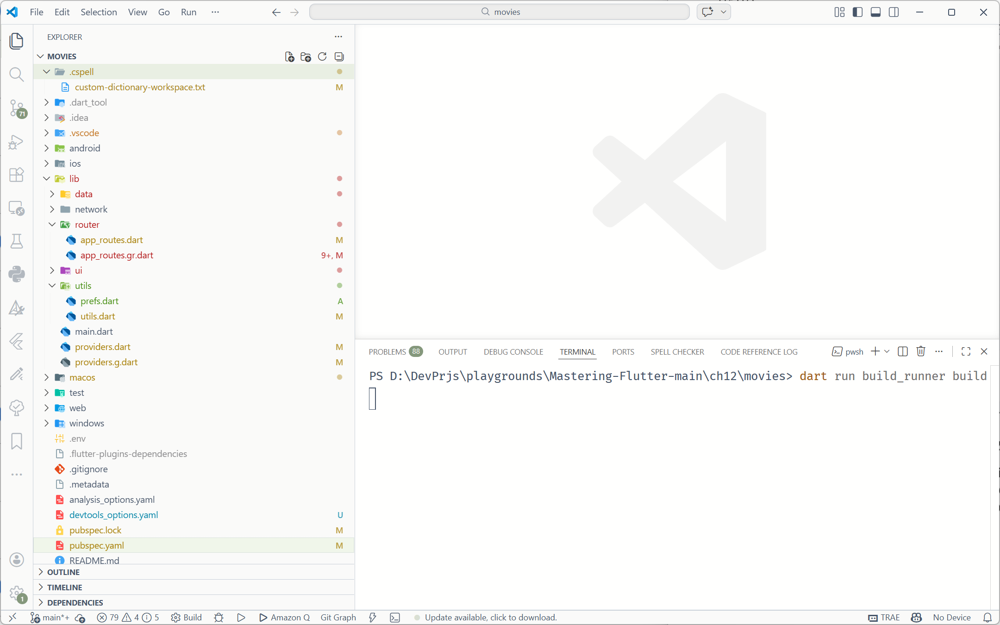
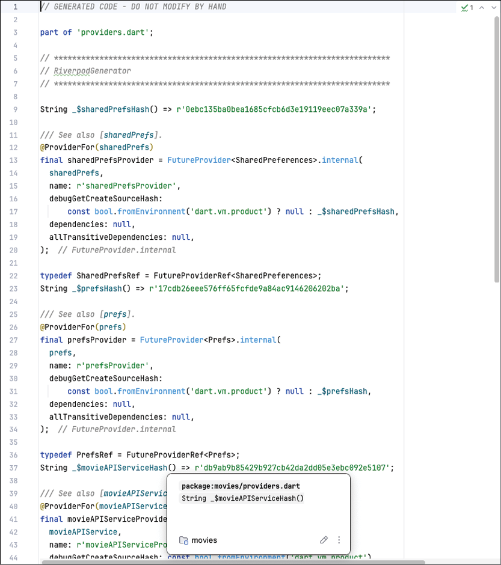
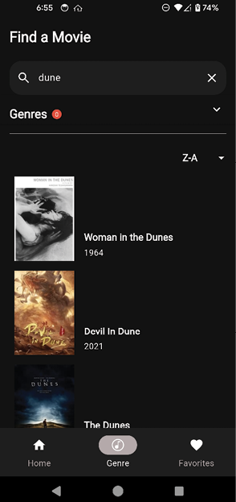

CHAPTER 12 Local Storage and Databases
Introduction
In this chapter, you will learn about storing information on the device. You will learn about storing data from simple key/value pairs to full databases and tables. This will allow you to save user information as well as cache data that does not need to be downloaded each time the app starts up.
Structure
The chapter covers the following topics:
- SharedPreferences
- Saving genres
- Databases
- Movie configuration
Objectives
By the end of this chapter, you will have a solid understanding of SharedPreferences and how to create local databases. You will learn how to create tables and database classes to interact with local files. You will save a user's genre selections to SharedPreferences and favorites to a local database. You will also download movie configuration and genre information and store them in the local database, caching that information for future sessions.
SharedPreferences
So far, you have learned how to build UIs that display information but have not saved any information on the local device. When a user restarts your app, it will start the same way each time. If you wanted to have settings or preferences that a user could set, it would not do any good if it only lasted the lifetime of the current session. In this chapter, you will learn how to save those settings and movie information so that if there is no internet connection, those settings will still be available.
There are many types of information you could save. You could save the current screen the user is on or their sorting preferences. In this chapter, you will save the user's favorites locally. Since these favorites cannot be stored on The Movie Database (TMDB) site, saving them locally is a good option. Of course, if the user uninstalls your app, they will lose any settings saved locally. For more permanent storage, you would need a server that would allow you to save that information. In Chapter 15, Firebase, you will learn about Firebase and how you can save that information in the cloud.
There are several ways to save data locally. This is usually done using the local storage that phones provide. You could save the information in a file you create but that is pretty low-level and there are better ways to do it. Both iOS and Android have a way to save preferences as well as a built-in SQLite database that can be used to save data. We will cover both preferences and different ways to use databases.
There are many types of persistence, but one of the most basic is the notion of preferences, where you can save small amounts of data. This is called SharedPreferences on Android. If you are familiar with iOS, that class is called UserDefaults. These classes allow you to save very simple key/value pairs to the device. It is not meant to store large amounts of data; it is meant to store settings. This can be the current user's access token, name, settings values, or anything that can be stored as an int, String, double, or Boolean. We will be using the shared_preferences plugin. This plugin supports all platforms.
Next, we will create a Prefs class that will handle all interactions with the shared_preferences plugin:
-
Open up
pubspec.yamland add:shared_preferences: ^2.5.5 -
Run
flutter pub get. -
Next, create
prefs.dartin theutilsdirectory. Add the following:import 'package:shared_preferences/shared_preferences.dart'; class Prefs { final SharedPreferences preferences; Prefs(this.preferences); // Add methods }This is the
Prefsclass that takes an instance of theSharedPreferencesclass. -
Next, create two methods for storing and getting strings:
Notice that thevoid setString(String key, String value) { preferences.setString(key, value); } String? getString(String key) { return preferences.getString(key); }setStringmethod takes a key and a string value. ThegetStringmethod just needs the key. If it does not exist, a null value is returned. -
Add the remaining methods:
This just creates getters and setters forvoid setInt(String key, int value) { preferences.setInt(key, value); } int? getInt(String key) { return preferences.getInt(key); } void setBool(String key, bool value) { preferences.setBool(key, value); } bool? getBool(String key) { return preferences.getBool(key); } void setDouble(String key, double value) { preferences.setDouble(key, value); } double? getDouble(String key) { return preferences.getDouble(key); }int,bool, anddouble. -
Open the
providers.dartfile in thelibdirectory. Add the following:(Make sure the imports are before the part statement). The first import is for theimport 'package:movies/utils/prefs.dart'; import 'package:shared_preferences/shared_preferences.dart'; @Riverpod(keepAlive: true) Future<SharedPreferences> sharedPrefs(Ref ref) => SharedPreferences.getInstance();prefs.dartfile you just created. The last import is for theSharedPreferencesplugin. The@Riverpodannotation tells theRiverpodgenerator to create a singleFutureProviderfor theSharedProviderplugin.Since you created a nice class to make this package easier to use, you will use the
Prefsclass instead. This also makes testing easier. Add the following:This will create a provider for the@Riverpod(keepAlive: true) Future<Prefs> prefs(Ref ref) async { final sharedPrefs = await ref.read(sharedPrefsProvider.future); return Prefs(sharedPrefs); }Prefsclass. -
Open up the Terminal tab at the bottom of Android Studio, as shown in the following figure:

Figure 12.1: Generating files
-
Then type
dart run build_runner build. This will run build_runner and will update theproviders.g.dartfile. You can have the build_runner running continuously by using the watch command instead of the build. Openingproviders.g.dartfile, you will see something as follows:
Figure 12.2: Generated file
This class has been created for you, so do not attempt to change it yourself. It will be overwritten the next time you run the builder. You do not need to worry about what is created. The most important variable is the
sharedPrefsProvidervariable. You can use this variable throughout your code to get anSharedPreferenceinstance.
Saving genres
A good way to use preferences is to save the selected genres. Since this is only needed on a per-phone basis, it is perfect for saving the user time. For example, if the user likes horror/romance films, pre-selecting those genres would save them time. The first thing we want to do is put the GenreState class into its file and add the freeze annotation.
Create the GenreState class:
-
Open up
genre_section.dartand remove theGenreStateclass. -
In the
data/modelsfolder, create a new file namedgenre_state.dart. -
Add the following:
import 'package:freezed_annotation/freezed_annotation.dart'; import 'package:movies/data/models/genre.dart'; part 'genre_state.freezed.dart'; part 'genre_state.g.dart'; @freezed abstract class GenreState with _$GenreState { const factory GenreState({required Genre genre, required bool isSelected}) = _GenreState; factory GenreState.fromJson(Map<String, dynamic> json) => _$GenreStateFromJson(json); } -
In the terminal, type
dart run build_runner build. -
Open
genre_section.dartand add theGenreStateimport. -
Open
genre_screen.dartand add theGenreStateimport. -
Above the
GenreScreenclass, add the following constant before the class that will be used to save genres:While we are in theconst String genreStringKey = 'GenreKey';GenreScreenclass, we will be adding the ability to search for movies. -
Remove the
currentMovieListvariable. -
Add the following variables:
The// after `late MovieViewModel movieViewModel;` String currentSearchString = ''; // `List<GenreState> genreStates = [];` List<MovieResults> currentMovieList = []; final moviesNotifier = ValueNotifier<List<MovieResults>>([]); MovieResponse? currentMovieResponse; Sorting selectedSort = Sorting.aToz;currentSearchStringholds the string the user is searching for. As we no longer use theMovieclass, thecurrentMovieListholds a list ofMovieResults. ThecurrentMovieResponseis the current list of movies based on the search a user made. Sorting starts with an A-Z sort, but the user can change that. -
Inside the
buildGenreStatemethod, add the following call at the end of the method:getSelectedGenres(); -
At the end of the class, add the import for the
collectionpackage:You will need to add thevoid getSelectedGenres() async { // 1 final prefs = await ref.read(prefsProvider.future); // 2 final genreNameList = prefs.getString(genreStringKey)?.split(','); if (genreNameList?.isNotEmpty == true) { // 3 for (final genreName in genreNameList!) { // 4 var genreState = genreStates .firstWhereOrNull((genre) => genre.genre.name == genreName); if (genreState != null) { // 5 final index = genreStates.indexOf(genreState); genreState = genreState.copyWith(isSelected: true); genreStates[index] = genreState; } } } }collectionimport for thefirstWhereOrNullcall. This method will get thegenresettings from the preferences package. Note that the genres are stored as a single string, separated by commas. Here is a breakdown:- Get an instance of the
Prefsclass. - Get the
genrestring and split it into an array of genre names. - Go through each genre.
- Find the genre state with that name.
- Get the index and then make a copy with the selected value set.
This gets the genres, but how do you save them?
- Get an instance of the
-
Before this method, add the following save method:
This will get thevoid saveSelectedGenres() async { final prefs = await ref.read(prefsProvider.future); final genreNameList = genreStates.map((state) => state.genre.name).toList(); prefs.setString(genreStringKey, genreNameList.join(',')); }Prefsclass and save the genres as a comma separated string. -
Update the
GenreSearchRowcall:This will take theGenreSearchRow((searchString) { currentSearchString = searchString; currentMovieResponse = null; FocusScope.of(context).unfocus(); expandedNotifier.value = false; search(); }),searchStringreturned by the search row, close the keyboard (unfocus call), close the genre section, and start a search. -
Since the
searchmethod does not exist yet, add thesearchmethod:ThisFuture<List<MovieResults>?> search() async { // 1 if (currentSearchString.isEmpty && genreStates.isEmpty) { moviesNotifier.value = <MovieResults>[]; return <MovieResults>[]; } // 2 // 1st, search by title // Search through the list for the search string final pageNumber = (currentMovieResponse?.page == null) ? 1 : (currentMovieResponse!.page + 1); // 3 if (currentSearchString.isNotEmpty) { currentMovieResponse = await movieViewModel.searchMovies(currentSearchString, pageNumber); currentMovieList = currentMovieResponse!.results; } // 4 // 2nd Search by genre if there is no search string if (currentSearchString.isEmpty && genreStates.isNotEmpty) { final buffer = getGenreString(); currentMovieResponse = await movieViewModel.searchMoviesByGenre( buffer.toString(), pageNumber, ); currentMovieList = currentMovieResponse!.results; // 3rd Search through the movies to see if they match our genres // 5 } else if (genreStates.isNotEmpty && currentMovieList.isNotEmpty) { currentMovieList = currentMovieList.where((movie) { for (final selectedGenre in genreStates) { if (movie.genreIds.contains(selectedGenre.genre.id)) { return true; } } return false; }).toList(); } // 6 sortMovies(); return currentMovieList; }searchmethod does several things. Here is a breakdown:- Check to see if the search string and genre states are empty.
- Update the page number (There could be multiple pages of results).
- Perform the search using the search string.
- If the search string is empty and we have genres, do a search by genre.
- If we have genres, go through the results and find movies that have those genres.
- Sort the movies.
Now add the
getGenreStringandsortMoviesmethods. -
Add the
getGenreStringmethod:ThisStringBuffer getGenreString() { final buffer = StringBuffer(); genreStates.map((e) { if (e.isSelected) { if (buffer.isNotEmpty) { buffer.write('|'); } buffer.write(e.genre.id); } }).toList(); return buffer; }getGenreStringmethod builds aStringBufferthat is a|delimited string. This is required by the movies API. -
Add the
sortMoviesmethod:This just returns a sorted list of movies. We now need a way to save the selected genres.void sortMovies() { if (currentMovieList.isEmpty) { return; } currentMovieList = currentMovieList.sorted((a, b) { switch (selectedSort) { case Sorting.aToz: return a.originalTitle.compareTo(b.originalTitle); case Sorting.zToa: return b.originalTitle.compareTo(a.originalTitle); case Sorting.rating: return b.popularity.compareTo(a.popularity); case Sorting.year: if (a.releaseDate != null && b.releaseDate != null) { return a.releaseDate!.compareTo(b.releaseDate!); } } return 0; }); moviesNotifier.value = currentMovieList; } -
Find
onGenreSelectedand replace with:This will save the selected genres. Next, we need to save the selected sort value.onGenresSelected: (genres) { genreStates = genres; saveSelectedGenres(); currentMovieResponse = null; }); -
Find
SortPickerand change the call to:This will re-sort the current movie list.SortPicker( useSliver: true, onSortSelected: (sorting) { selectedSort = sorting; sortMovies(); }), -
Change the call to
VerticalMovieListwith:This wraps the movie list with aValueListenableBuilder<List<MovieResults>>( valueListenable: moviesNotifier, builder: (BuildContext context, List<MovieResults> value, Widget? child) { return VerticalMovieList( movies: value, movieViewModel: movieViewModel, onMovieTap: (movieId) { context.router.push(MovieDetailRoute(movieId: movieId)); }, ); }, ),ValueListenableBuilder. This will help performance by only updating this section if the list of movies changes. Notice thatVerticalMovieListdoes not like those changes. -
Open
vert_movie_list.dartand remove theonMovieTap typedefas it already exists inutils.dart. Import theutils.dartfile. -
Change the fields and constructor to the following:
Add any imports needed.final List<MovieResults> movies; final MovieViewModel movieViewModel; final OnMovieTap onMovieTap; const VerticalMovieList({ super.key, required this.movies, required this.movieViewModel, required this.onMovieTap, }); -
Change the call to
MovieRowto:This passes the view model toreturn MovieRow( movie: movies[index], movieViewModel: movieViewModel, onMovieTap: (movie) { onMovieTap(movie.id); }, );MovieRow. -
Open
movie_row.dart. Change the fields and constructor to:Add any imports. Notice that we changedfinal MovieResults movie; final MovieViewModel movieViewModel; final OnMovieResultsTap onMovieTap; const MovieRow({ required this.movie, required this.movieViewModel, required this.onMovieTap, super.key, });onMovieTaptoonMovieResultsTap. That definition does not exist. We want to pass theMovieResultsto the caller. -
Open
utils.dartand add:typedef OnMovieResultsTap = void Function(MovieResults movie); const Widget emptyWidget = SizedBox.shrink(); -
Back in
MovieRow, change the first two lines in the build method with:final imageUrl = getImageUrl(ImageSize.small, movie.posterPath); final uniqueHeroTag = '${imageUrl}MovieRow'; if (imageUrl.isNotEmpty) { -
Change onMovieTap(movie.movieId) to:
onMovieTap(movie); -
Change the
imageUrlparameter inCachedNetworkImagecall to:Next, you need to put in real movie information in instead of just using the text title and 1979 for the title and year.imageUrl: imageUrl, -
Replace the
Columnwith:This wraps theExpanded( child: LayoutBuilder( builder: (BuildContext context, BoxConstraints constraints) { return Column( mainAxisSize: MainAxisSize.min, mainAxisAlignment: MainAxisAlignment.end, crossAxisAlignment: CrossAxisAlignment.start, children: [ const Spacer(), SizedBox( width: constraints.maxWidth, child: AutoSizeText( movie.title, maxLines: 3, minFontSize: 10, style: Theme.of(context).textTheme.labelLarge, overflow: TextOverflow.ellipsis, ), ), addVerticalSpace(4), movie.releaseDate != null ? Text( yearFormat.format(movie.releaseDate!), style: Theme.of(context).textTheme.bodyMedium, ) : Container(), addVerticalSpace(4), ], ); }, ), ),columnwithExpandedandLayoutBuilderwidgets. TheExpandedwidget makes the column as big as possible, and theLayoutBuildergives us some sizes to work with. Specifically, we need the column's width. TheSizedBoxuses theconstraints.maxWidthvalue from theLayoutBuilder.
Perform a hot reload. Press the Genre tab, type in a search query, select any genres, and press the search icon. You should see something like the following figure:

Figure 12.3: Genre search
Databases
There are times when an internet connection is not available or when you want to store information locally. That is where on-device databases come in. By storing information locally, you can display information to the user without a connection or save information to be uploaded to the internet later when the connection is restored. Luckily, Flutter has many database options for you. We will cover some of the most popular databases and then we will use the drift database as the database for the movies app.
SQLite
Both Android and iOS come with the built-in SQLite database. This is a self-contained, serverless SQL database engine. It is file based, very small, and efficient. It does not require any configuration and uses SQL. If you are familiar with SQL, you will understand how to use SQLite. However, because it is based on SQL, it can be hard for users who do not know that language. It is important to understand the basics of SQL. SQL stores data in tables that are made up of columns and rows. Each column is a specific data type, and each row is a record in that table. SQL comprises queries (getting information) and commands for adding, deleting, and updating data.
For queries, you should use the SELECT command. This would look as follows:
SELECT name, address FROM Customers;
This command selects the name and address columns from the Customers table.
To add data, you would use the INSERT command as follows:
INSERT INTO Customers (NAME, ADDRESS) VALUES(value1, value2);
This makes a new row and inserts value1 into the name column and value2 into the address column.
To delete a row, use the DELETE command as follows:
DELETE FROM Customers WHERE id = 1;
This command searches for the row with an id of 1 and deletes that row.
To update a row, use the UPDATE command as follows:
UPDATE Customers SET phone='555-12345' WHERE id=1;
This will change the row's phone column to this value for the row with an id of 1.
If you want to use SQLite by itself, you can use the sqlite3 package. You can find this package at: https://pub.dev/packages/sqlite3.
Floor
Floor is a reactive SQLite abstraction that is inspired by the Android Room persistence library. This package requires a knowledge of SQL as you use query statements in the code which is mapped to classes. If you come from the Android world and like the Room database, you will be familiar with the setup of this library. This package requires the creation of entities, which are classes for storing information in tables. You then create a data access object (DAO) class for queries, insertions, updates, and deletions. Finally, you need to create a database class that extends the FloorDatabase. This class will hold all of the DAO classes. Here is an example of a Person entity:
import 'package:floor/floor.dart';
@entity
class Person {
@primaryKey
final int id;
final String name;
Person(this.id, this.name);
}
@entity annotation to mark this class as an entity. Because the plugin uses annotations, you must use the floor generator to create classes based on this annotation. To create a DAO, you would use something as follows:
import 'package:floor/floor.dart';
@dao
abstract class PersonDao {
@Query('SELECT * FROM Person')
Future<List<Person>> findAllPeople();
@Query('SELECT name FROM Person')
Stream<List<String>> findAllPeopleName();
@Query('SELECT * FROM Person WHERE id = :id')
Stream<Person?> findPersonById(int id);
@insert
Future<void> insertPerson(Person person);
}
import 'dart:async';
import 'package:floor/floor.dart';
import 'package:sqflite/sqflite.dart' as sqflite;
import 'dao/person_dao.dart';
import 'entity/person.dart';
part 'app_database.g.dart'; // the generated code will be there
@Database(version: 1, entities: [Person])
abstract class AppDatabase extends FloorDatabase {
PersonDao get personDao;
}
final database = await $FloorAppDatabase.databaseBuilder('app_database.db').build();
final personDao = database.personDao;
final person = Person(1, 'Frank');
await personDao.insertPerson(person);
final result = await personDao.findPersonById(1);
Hive
Hive is a lightweight and fast key/value database written in Dart. You can also store annotated classes. Here is an example of a simple box:
var box = Hive.box('myBox');
box.put('name', 'David');
var name = box.get('name');
BoxCollections. This is just a collection of multiple boxes. Here is an example:
final collection = await BoxCollection.open(
'MyFirstFluffyBox', // Name of your database
{'cats', 'dogs'}, // Names of your boxes
path: './', // Path where to store your boxes (Only used in Flutter / Dart IO)
key: HiveCipher(), // Key to encrypt your boxes (Only used in Flutter / Dart IO)
);
// Open your boxes. Optional: Give it a type.
final catsBox = collection.openBox<Map>('cats');
// Put something in
await catsBox.put('fluffy', {'name': 'Fluffy', 'age': 4});
await catsBox.put('loki', {'name': 'Loki', 'age': 2});
// Get values of type (immutable) Map?
final loki = await catsBox.get('loki');
@HiveType(typeId: 0)
class Person extends HiveObject {
@HiveField(0)
String name;
@HiveField(1)
int age;
}
var box = await Hive.openBox('myBox');
var person = Person()
..name = 'Dave'
..age = 22;
box.add(person);
print(box.getAt(0)); // Dave - 22
person.age = 30;
person.save();
Isar
If you are interested in a NoSQL database, then Isar is one of the best. It is very fast and works on most platforms. The author originally used it for the movies project and ran into trouble with the web. That part is still in development, so we chose drift. Isar uses annotations and a generator as well. Isar uses the @collection annotation for classes. One of the nice features of this database is that you can have references for other collections. Here is an example of an email and recipient class:
part 'email.g.dart';
@collection
class Email {
Id id = Isar.autoIncrement; // you can also use id = null to auto increment
@Index(type: IndexType.value)
String? title;
List<Recipient>? recipients;
@enumerated
Status status = Status.pending;
}
@embedded
class Recipient {
String? name;
String? address;
}
enum Status {
draft,
pending,
sent,
}
path_provider package and open the database as follows:
final dir = await getApplicationDocumentsDirectory();
final isar = await Isar.open(
[EmailSchema],
directory: dir.path,
);
final emails = await isar.emails.filter()
.titleContains('awesome', caseSensitive: false)
.sortByStatusDesc()
.limit(10)
.findAll();
final newEmail = Email()..title = 'Amazing new database';
await isar.writeTxn(() {
await isar.emails.put(newEmail); // insert & update
});
final existingEmail = await isar.emails.get(newEmail.id!); // get
await isar.writeTxn(() {
await isar.emails.delete(existingEmail.id!); // delete
});
final importantEmails = isar.emails
.where()
.titleStartsWith('Important') // use index
.limit(10)
.findAll()
final specificEmails = isar.emails
.filter()
.recipient((q) => q.nameEqualTo('David')) // query embedded objects
.or()
.titleMatches('*university*', caseSensitive: false) // title containing 'university' (case insensitive)
.findAll()
Drift
Drift is described as a reactive persistence library built on top of SQLite. You can find documentation for drift at https://pub.dev/packages/drift and https://drift.simonbinder.eu/. Drift is similar to other packages in that you need to create Table classes and annotate a Database class. It has a builder for these generated files. Drift's tables are a bit different. All table classes must extend the Table class, and you define fields with the get keyword. The following is an example table:
class TodoItems extends Table {
IntColumn get id => integer().autoIncrement()();
TextColumn get title => text().withLength(min: 6, max: 32)();
TextColumn get content => text().named('body')();
IntColumn get category =>
integer().nullable().references(TodoCategory, #id)();
DateTimeColumn get createdAt => dateTime().nullable()();
}
IntColumn get id => integer().autoIncrement()();
id that is an IntColumn and auto increments (automatically increments the id without you knowing what the next value should be). You can have text fields defined as a TextColumn and a date field defined as a DateTimeColumn. To create a Database, you create a class that extends to a Drift built class, similar to the way freezed creates its classes. The following is a sample:
@DriftDatabase(tables: [TodoItems, TodoCategory])
class AppDatabase extends _$AppDatabase {
}
The _AppDatabase class will get generated for you. The @DriftDatabase annotation defines the tables.
Movie configuration
TMDB has an API call that will get you information on all the image types and sizes. This API is at https://api.themoviedb.org/3/configuration. This API returns the base URL for images as well as the sizes. You build a URL for each image from the base URL and a size. Instead of hard coding the sizes and base URLs, you can download the configuration information and store it in a local database.
First, we need to create a UI model for the configuration, use the following steps:
-
Create a new file in the
data/modelsfolder namedmovie_configuration.dart. -
Add the following:
This holds all the information on the movie images.import 'package:freezed_annotation/freezed_annotation.dart'; part 'movie_configuration.freezed.dart'; part 'movie_configuration.g.dart'; @freezed abstract class MovieConfiguration with _$MovieConfiguration { const factory MovieConfiguration({ @JsonKey(name: 'images') required MovieConfigurationImages images, @JsonKey(name: 'change_keys') required List<String> changeKeys, }) = _MovieConfiguration; factory MovieConfiguration.fromJson(Map<String, dynamic> json) => _$MovieConfigurationFromJson(json); } @freezed abstract class MovieConfigurationImages with _$MovieConfigurationImages { const factory MovieConfigurationImages({ @JsonKey(name: 'base_url') required String baseUrl, @JsonKey(name: 'secure_base_url') required String secureBaseUrl, @JsonKey(name: 'backdrop_sizes') required List<String> backdropSizes, @JsonKey(name: 'logo_sizes') required List<String> logoSizes, @JsonKey(name: 'poster_sizes') required List<String> posterSizes, @JsonKey(name: 'profile_sizes') required List<String> profileSizes, @JsonKey(name: 'still_sizes') required List<String> stillSizes, }) = _MovieConfigurationImages; factory MovieConfigurationImages.fromJson(Map<String, dynamic> json) => _$MovieConfigurationImagesFromJson(json); } -
Create a new file in the
data/modelsfolder calledmodels.dartto hold the list of all the models for the UI. Add all of the models:This is useful when you need several model imports. By importing this file, you will get all models.export 'genre.dart'; export 'movie_response.dart'; export 'movie_results.dart'; export 'movie_details.dart'; export 'movie_credits.dart'; export 'movie_videos.dart'; export 'movie_configuration.dart';
Images
Now that we have a configuration class, we can update our utility methods for getting the image URL. Open utils.dart and replace getImageUrl with the following:
String imageUrl(String baseUrl, String size, String file) => '$baseUrl$size$file';
String? getSizedImageUrl(ImageSize size, MovieConfiguration configuration, String? file) {
if (file == null) {
return null;
}
switch (size) {
case ImageSize.small:
return imageUrl(configuration.images.baseUrl, configuration.images.posterSizes[1], file);
case ImageSize.large:
return imageUrl(configuration.images.baseUrl, configuration.images.posterSizes[5], file);
}
}
String? getMovieDetailsImagePath(
MovieDetails details, MovieConfiguration configuration) {
return getSizedImageUrl(
ImageSize.large,
configuration,
details.backdropPath);
}
MovieConfiguration class to build the URL. The getMovieDetailsImagePath method will return a larger image using the backdropPath URL.
Database models
Now, we can start creating database models of genres and favorites.
Genres will just be a list of supported genres from TMDB.
Favorites will be what the user selects as a movie favorite and will be stored so that when they restart the app, all of their favorites are listed. Now, start creating the database models:
-
In the
datafolder, create a new folder nameddatabase. -
In the
databasefolder, create a new folder namedmodels. -
In the
modelsfolder, create a new file namedgenre.dart. -
Add the following:
import 'package:freezed_annotation/freezed_annotation.dart'; part 'genre.freezed.dart'; part 'genre.g.dart'; @freezed abstract class DBMovieGenre with _$DBMovieGenre { const factory DBMovieGenre({ required int id, required int remoteId, required String name, }) = _DBMovieGenre; // Add this private constructor const DBMovieGenre._(); factory DBMovieGenre.fromJson(Map<String, dynamic> json) => _$DBMovieGenreFromJson(json); } -
Create a file named
favorite.dartand add:Note thatimport 'package:freezed_annotation/freezed_annotation.dart'; part 'favorite.freezed.dart'; part 'favorite.g.dart'; @freezed abstract class DBFavorite with _$DBFavorite { const factory DBFavorite({ required int id, required int movieId, required String backdropPath, required String posterPath, required bool favorite, required double popularity, required DateTime releaseDate, required String title, required String overview, }) = _DBFavorite; // Add this private constructor const DBFavorite._(); factory DBFavorite.fromJson(Map<String, dynamic> json) => _$DBFavoriteFromJson(json); }DBFavoriteis more likeMovieDetailsthan theFavoriteclass. This is because we want to save all the details about the movie without making another network call. -
Next, create the file
configuration.dart. This file will hold the movie configuration information and has image sizing values:import 'package:freezed_annotation/freezed_annotation.dart'; part 'configuration.freezed.dart'; part 'configuration.g.dart'; @freezed abstract class DBConfiguration with _$DBConfiguration { const factory DBConfiguration({ required int id, required DBConfigurationImages images, required List<String> changeKeys, }) = _DBConfiguration; // Add this private constructor const DBConfiguration._(); factory DBConfiguration.fromJson(Map<String, dynamic> json) => _$DBConfigurationFromJson(json); } @freezed abstract class DBConfigurationImages with _$DBConfigurationImages { const factory DBConfigurationImages({ required String baseUrl, required String secureBaseUrl, required List<String> backdropSizes, required List<String> logoSizes, required List<String> posterSizes, required List<String> profileSizes, required List<String> stillSizes, }) = _DBConfigurationImages; const DBConfigurationImages._(); factory DBConfigurationImages.fromJson(Map<String, dynamic> json) => _$DBConfigurationImagesFromJson(json); } -
Next, create the file
database_models.dart. This is called a barrel file and holds all of the model files:export 'configuration.dart'; export 'genre.dart'; export 'favorite.dart'; -
Then, type
dart run build_runner build. -
Now, add the
driftplugins. Inpubspec.yamladd the following:drift: ^2.20.2 drift_flutter: ^0.2.0 sqlite3_flutter_libs: ^0.5.24 path_provider: ^2.1.4 path: ^1.9.0 -
In the
dev_dependenciessection, add:drift_dev: ^2.20.3 -
Then, add the following to resolve some dependency conflicts:
dependency_overrides: web: ^1.0.0目前暂时不需要此兼容性覆盖
-
In the
databasefolder, create a new file nameddatabase_interface.dart. Add the following:This will be the interface for all databases.import 'package:movies/data/database/models/database_models.dart'; abstract class IDatabase { Future deleteDatabase(); Future<List<DBMovieGenre>> getGenres(); Future saveGenres(List<DBMovieGenre> genres); Future<DBConfiguration?> getMovieConfiguration(); Future<DBConfiguration?> getMovieConfigurationById(int id); Future saveMovieConfiguration(DBConfiguration configuration); Future saveFavorite(DBFavorite favorite); Future<bool> removeFavorite(int id); Future<List<DBFavorite>> getFavorites(); Stream<List<DBFavorite>> streamFavorites(); } -
To create the drift database, create a new folder named
driftin the database folder. -
Create the file
movie_database.dartin thedriftfolder. Add:This file defines tables for movie image configuration, favorites, and genres. Theimport 'package:drift/drift.dart'; import 'package:drift_flutter/drift_flutter.dart'; part 'movie_database.g.dart'; class DriftConfigurationImages extends Table { // TODO Add fields } class DriftFavorite extends Table { // TODO Add fields } class DriftGenre extends Table { // TODO Add fields } @DriftDatabase( tables: [DriftFavorite, DriftConfigurationImages, DriftGenre], ) class MovieDatabase extends _$MovieDatabase { MovieDatabase() : super(driftDatabase(name: 'Movies')); @override int get schemaVersion => 1; }MovieDatabaseclass is pretty simple. Just pass in the name of the movie file and annotate the class with the@DriftDatabaseannotation, which has all three tables. -
Next, add the
DriftConfigurationImagesfields:This defines an id field as well as URLs and size strings.IntColumn get id => integer().autoIncrement()(); TextColumn get baseUrl => text()(); TextColumn get secureBaseUrl => text()(); TextColumn get backdropSizes => text()(); TextColumn get logoSizes => text()(); TextColumn get posterSizes => text()(); TextColumn get profileSizes => text()(); TextColumn get stillSizes => text()(); -
Next, add the
DriftFavoritefields:IntColumn get id => integer().autoIncrement()(); IntColumn get movieId => integer()(); TextColumn get backdropPath => text()(); TextColumn get posterPath => text()(); BoolColumn get favorite => boolean()(); RealColumn get popularity => real()(); DateTimeColumn get releaseDate => dateTime()(); TextColumn get title => text()(); TextColumn get overview => text()(); -
Next, add the
DriftGenrefields:IntColumn get id => integer().autoIncrement()(); IntColumn get remoteId => integer()(); TextColumn get name => text()(); -
Create the file
drift_database.dartin thedriftfolder. This file will do the work of retrieving and saving database information. Add the following code:import 'package:drift/drift.dart'; import 'package:movies/data/database/models/database_interface.dart'; import 'package:movies/data/database/models/database_models.dart'; import 'package:movies/data/database/drift/movie_database.dart'; class DriftDatabase implements IDatabase { final MovieDatabase movieDatabase = MovieDatabase(); DriftDatabase(); @override Future deleteDatabase() async {} @override Future<List<DBFavorite>> getFavorites() async { // TODO Add getFavorites } @override Future<List<DBMovieGenre>> getGenres() async { // TODO Add getGenres } @override Future<DBConfiguration?> getMovieConfiguration() async { // TODO Add getMovieConfiguration } @override Future<DBConfiguration?> getMovieConfigurationById(int id) async { return getMovieConfiguration(); } @override Future<bool> removeFavorite(int id) async { // TODO Add removeFavorite } @override Future saveFavorite(DBFavorite favorite) async { // TODO Add saveFavorite } @override Future saveGenres(List<DBMovieGenre> genres) async { // TODO Add saveGenres } @override Future saveMovieConfiguration(DBConfiguration configuration) async { // TODO Add saveMovieConfiguration } @override Stream<List<DBFavorite>> streamFavorites() { // TODO Add streamFavorites } } -
Now, add the
getFavoritescode:1. Drift creates a managers field that has a driftXXXX getter for each table. 2. For each favorite, add a database favorite to the array.// 1 final favorites = await movieDatabase.managers.driftFavorite.get(); final dbFavorites = <DBFavorite>[]; for (final favorite in favorites) { // 2 dbFavorites.add(DBFavorite( id: favorite.id, movieId: favorite.movieId, backdropPath: favorite.backdropPath, posterPath: favorite.posterPath, favorite: favorite.favorite, popularity: favorite.popularity, releaseDate: favorite.releaseDate, title: favorite.title, overview: favorite.overview)); } return dbFavorites; -
Add the
getGenrescode:This is similar to favorites but with genres.final genres = await movieDatabase.managers.driftGenre.get(); final dbGenres = <DBMovieGenre>[]; for (final genre in genres) { dbGenres.add(DBMovieGenre( id: genre.id, remoteId: genre.remoteId, name: genre.name, )); } return dbGenres; -
Add the
getMovieConfigurationcode:This creates an array of image configurations.final images = await movieDatabase.managers.driftConfigurationImages.get(); final dbImages = <DBConfigurationImages>[]; for (final genre in images) { dbImages.add(DBConfigurationImages( baseUrl: genre.baseUrl, secureBaseUrl: genre.secureBaseUrl, backdropSizes: genre.backdropSizes.split(','), logoSizes: genre.logoSizes.split(‘,’), posterSizes: genre.posterSizes.split(','), profileSizes: genre.profileSizes.split(','), stillSizes: genre.stillSizes.split(','), )); } if (dbImages.isEmpty) { return null; } // Don't care about changeKeys return DBConfiguration(id: 1, images: dbImages[0], changeKeys: []); -
Add the
removeFavoritecode:This will delete a favorite that has the passed in ID.return await movieDatabase.driftFavorite.deleteWhere( (table) => table.id.equals(id), ) != -1; -
Add the
saveFavoritecode:This uses the create method to create a new favorite row in the database.movieDatabase.managers.driftFavorite.create( (x) => DriftFavoriteData( id: favorite.id, movieId: favorite.movieId, backdropPath: favorite.backdropPath, posterPath: favorite.posterPath, favorite: favorite.favorite, popularity: favorite.popularity, releaseDate: favorite.releaseDate, title: favorite.title, overview: favorite.overview, ), ); -
Add the
saveGenrecode:This will go through the list and create new genre entries. This will happen only once.for (final genre in genres) { movieDatabase.managers.driftGenre.create( (x) => DriftGenreData( id: genre.id, remoteId: genre.remoteId, name: genre.name, ), ); } -
Add the
saveMovieConfgurationcode:This will create a movie image configuration row.movieDatabase.managers.driftConfigurationImages.create( (x) => DriftConfigurationImagesCompanion.insert( baseUrl: configuration.images.baseUrl, secureBaseUrl: configuration.images.secureBaseUrl, backdropSizes: configuration.images.backdropSizes.join(','), logoSizes: configuration.images.logoSizes.join(','), posterSizes: configuration.images.posterSizes.join(','), profileSizes: configuration.images.profileSizes.join(','), stillSizes: configuration.images.stillSizes.join(','), ), ); -
Add the
streamFavoritescode:return movieDatabase.managers.driftFavorite.watch().map((dbFavorites) { final favorites = <DBFavorite>[]; for (final favorite in dbFavorites) { favorites.add( DBFavorite( id: favorite.id, movieId: favorite.movieId, backdropPath: favorite.backdropPath, posterPath: favorite.posterPath, favorite: favorite.favorite, popularity: favorite.popularity, releaseDate: favorite.releaseDate, title: favorite.title, overview: favorite.overview, ), ); } return favorites; });Driftsupports streams. Using thewatchmethod returns a stream, and then we follow that with a map, which will convert the returned type into one we can work with.
Movie view model
Now that you have the repository done, you need to update the MovieViewModel to use it. Open movie_viewmodel.dart. Follow these steps:
-
After the
movieAPIServicefield, add the following:final IDatabase database; -
Add a movie configuration field:
MovieConfiguration? movieConfiguration; -
Remove the following:
Stream<List<Favorite>>? favoriteStream; List<Favorite>? favoriteList; -
Change the constructor to:
MovieViewModel({required this.movieAPIService, required this.database}); -
Change
setupConfigurationto:Future setupConfiguration() async { final response = await movieAPIService.getMovieConfiguration(); if (response.statusCode == 200) { movieConfiguration = MovieConfiguration.fromJson(response.data); } else { logError( 'Failed to load genres with error ${response.statusCode} and message ${response.statusMessage}'); } } -
Add the following method:
String? getImageUrl(ImageSize size, String? file) { if (file == null || movieConfiguration == null) { logMessage('movieConfiguration is null for getImageUrl file: $file'); return null; } return getSizedImageUrl(size, movieConfiguration!, file); } -
Remove
streamFavoritesandupdateFavoriteand replace it with:Future saveFavorite(MovieDetails movieDetails) async { database.saveFavorite(DBFavorite( id: movieDetails.id, movieId: movieDetails.id, backdropPath: movieDetails.backdropPath, posterPath: movieDetails.posterPath, favorite: true, popularity: movieDetails.popularity, releaseDate: movieDetails.releaseDate, title: movieDetails.title, overview: movieDetails.overview)); } Future<bool> removeFavorite(int id) async { return database.removeFavorite(id); } Future<List<DBFavorite>> getFavorites() async { return database.getFavorites(); } Stream<List<DBFavorite>> streamFavorites() { return database.streamFavorites(); } -
Open up
providers.dartto add new providers and update the viewmodel provider. Add the following ( ch11.md 中已经添加过了):@Riverpod(keepAlive: true) MovieAPIService movieAPIService(Ref ref) => MovieAPIService(); -
Then change
movieViewModelto:final database = await ref.read(driftDatabaseProvider.future); final model = MovieViewModel( database: database, movieAPIService: ref.read(movieAPIServiceProvider), ); await model.setup(); return model; -
At the end of the file add:
This adds a provider for the drift database.@Riverpod(keepAlive: true) Future<IDatabase> driftDatabase(Ref ref) { return Future.value(DriftDatabase()); } -
Then type
dart run build_runner build. -
Open
favorite_screen.dart. -
Change
FavoritetoDBFavoriteeverywhere in the file. -
In the
onFavoritesTapcall, change thesetStatecode with the following:removeFavorite(favorite); -
Change the
removeFavoritemethod to:await movieViewModel.removeFavorite(favorite.id); setState(() {}); -
In
vert_favorite_list.dartchangeFavoritetoDBFavorite. -
In
favorite_row.dartchangeFavoritetoDBFavorite. -
Change the
imageUrlfield to:final imageUrl = movieViewModel.getImageUrl(ImageSize.small, favorite.posterPath); -
Since
imageUrlwill be null if there is no value, remove theif (imageUrl.isNotEmpty)check and the else block of code. -
Change the
CachedNetworkImagecall to:child: imageUrl != null ? CachedNetworkImage( imageUrl: imageUrl, alignment: Alignment.topCenter, fit: BoxFit.cover, height: 140, width: 100, ) : emptyWidget, -
Change the
Titlestring tofavorite.title. -
Change the
'1972'text toyearFormat.format(favorite.releaseDate). -
In
utils.dart, change theOnFavoriteResultsTapto use aDBFavorite. -
Change all calls of
getImageUrlto call themovieViewModel'sgetImageUrlin all files. (do a find and replace).
Cleanup
There are a few files that need to be cleaned up due to all of the changes.
-
Start with
home_screen_image.dart, change theCachedNetworkImagecall to:child: imageUrl != null ? CachedNetworkImage( imageUrl: imageUrl, alignment: Alignment.topCenter, fit: BoxFit.fitHeight, height: 374, width: screenWidth, ) : emptyWidget, -
In
horiz_movies.dart, change the extended class fromStatelessWidgettoConsumerWidgetto allow us to get the movie view model. -
Change the
buildmethod to:Widget build(BuildContext context, WidgetRef ref) { -
Then add and wrap the
SizedBoxwith:final movieAsync = ref.watch(movieViewModelProvider); return movieAsync.when( error: (e, st) => Text(e.toString()), loading: () => Container(), data: (viewModel) { return SizedBox( -
Change the
imageUrlandMovieWidgetto:final imageUrl = viewModel.getImageUrl( ImageSize.small, movies[index].posterPath, ); return imageUrl != null ? MovieWidget( movieId: movies[index].id, movieUrl: imageUrl, onMovieTap: onMovieTap, movieType: movieType, ) : emptyWidget; -
In
detail_image.dart, add amovieConfigurationfield and change the constructor to:// under `final MovieDetails details;` final MovieConfiguration movieConfiguration; const DetailImage({ super.key, required this.details, required this.movieConfiguration, }); -
Change the
imageUrldefinition to:This method is a bit different as it uses thefinal imageUrl = getMovieDetailsImagePath( widget.details, widget.movieConfiguration, );backdropPathand a large image. -
Change the
CachedNetworkImagecall to:child: imageUrl != null ? CachedNetworkImage( imageUrl: imageUrl, alignment: Alignment.topCenter, fit: BoxFit.fitWidth, height: 200, width: screenWidth, ) : emptyWidget, -
In
movie_detail.dart, add the following after themovieVideosfield definition:List<DBFavorite> favorites = []; int currentFavoriteId = -1; -
After setting the
movieViewModelin thedata: (viewModel), add the following://data: (viewModel) { // movieViewModel = viewModel; getFavorites(); -
Add the following two methods:
Future getFavorites() async { favorites = await movieViewModel.getFavorites(); favoriteNotifier.value = isMovieFavorite(widget.movieId); } bool isMovieFavorite(int id) { return favorites.firstWhereOrNull((favorite) => favorite.movieId == id) != null; } -
Import the
collection.dartpackage (forfirstWhereOrNull). -
Change the call to
DetailImageto:DetailImage( details: movieDetails, movieConfiguration: movieViewModel.movieConfiguration!, ), -
Change the
onFavoriteSelectedcallback to:onFavoriteSelected: () async { if (favoriteNotifier.value) { if (currentFavoriteId != -1) { movieViewModel.removeFavorite( currentFavoriteId, ); } favoriteNotifier.value = false; } else { currentFavoriteId = movieDetails.id; await movieViewModel.saveFavorite( movieDetails, ); favoriteNotifier.value = true; } }, -
Change the call to
HorizontalCastto:HorizontalCast(movieViewModel: movieViewModel, castList: credits?.cast ?? []); -
Open
horiz_cast.dart, add the movie view model, and change the constructor:final MovieViewModel movieViewModel; const HorizontalCast({required this.movieViewModel, required this.castList, super.key}); -
Change the
CastImagecall to:var imageUrl = movieViewModel.getImageUrl( ImageSize.small, castList[index].profilePath, ); return imageUrl != null ? CastImage(imageUrl: imageUrl, name: castList[index].name) : emptyWidget; -
Open
movie_row.dartand remove the check forimageUrlbeing empty. -
Change the
CachedNetworkImagecall to:child: imageUrl != null ? CachedNetworkImage( imageUrl: imageUrl, alignment: Alignment.topCenter, fit: BoxFit.cover, height: 142, width: 100, ) : emptyWidget,
Since the app has had multiple plugins added, you will need to stop and restart it. Rerun the app and test the added features:
- Try selecting multiple genres on the
Genrescreen. Stop/restart the app to see if they are still there. - In a Movie detail screen, click the favorite button and then go to the favorites page to see if it is there.
- Click on the favorite button in the
Favoritesscreen to make sure it is removed. - Go back to the detail screen of a favorite movie and ensure the favorite button is red.
Conclusion
In this chapter, you learned all about SharedPreferences and how you can save key/value data. You saved selected genre information. You could also have saved information like whether the user chose a light/dark theme or any other information that can be contained as a basic dart type. You then explored different databases and used the drift database to save genre, movie configuration, and favorite information. This will provide cached genre and movie configuration and allow the user to save their favorite movies.
In the next chapter, you will learn how to modify your app to work on the web and the desktop. Two great platforms that expand the reach of your apps. You will learn how to handle menus for desktop apps as well as adjust your UI to handle larger screens. You will also learn how to deploy web apps using Firebase hosting. You will then be able to create desktop apps for macOS and Windows.